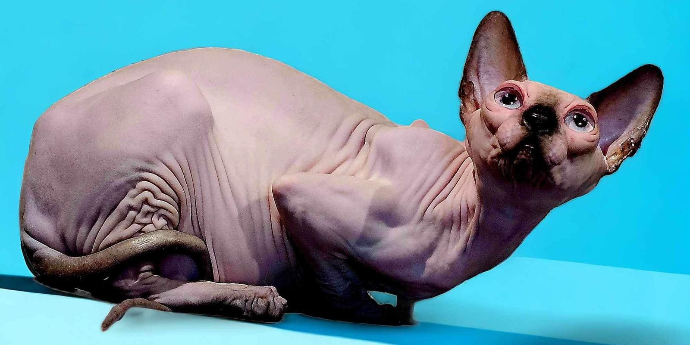

The Sphynx is one of the most unique and affectionate cat breeds in the world, known for its hairless appearance, oversized ears, expressive eyes, and loving personality.
Despite their elegant appearance, Sphynx cats are playful, intelligent, and deeply social companions. They thrive on human interaction and often enjoy following their families from room to room.
Their warm personalities, clown-like behavior, and affectionate nature have earned them a reputation as one of the most people-oriented cat breeds.
Sphynx cats require regular skin care and routine maintenance to keep them healthy and comfortable. In return, they reward their families with endless companionship and love.